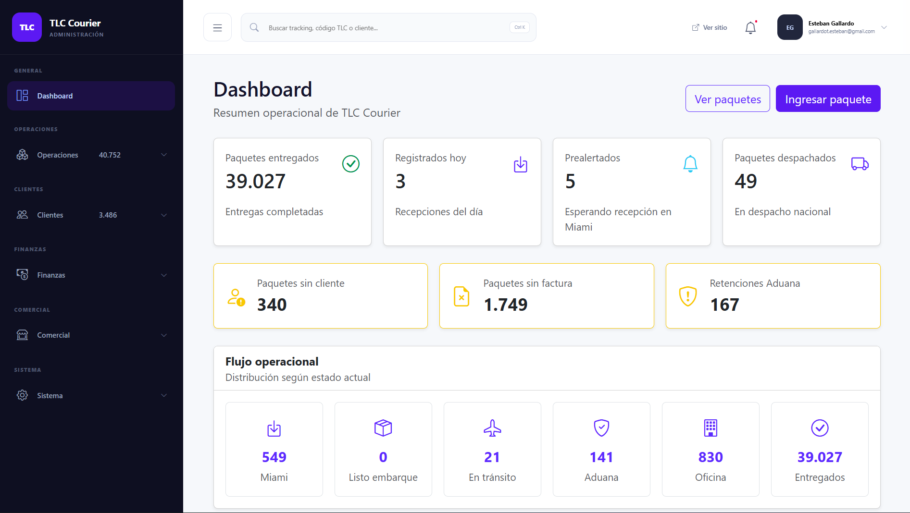
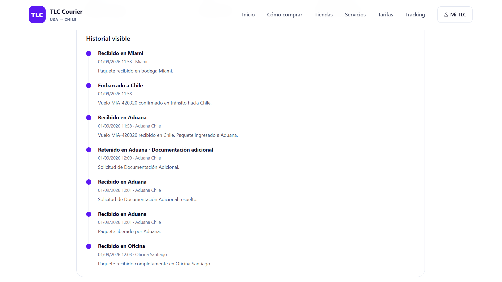
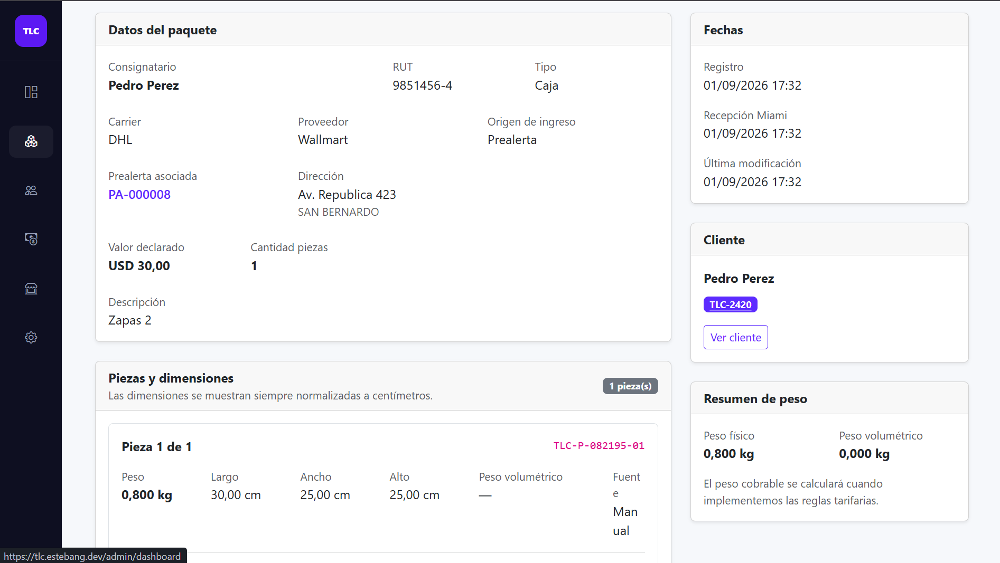

TLC Courier
Reconstrucción y mejora de una plataforma logística existente para centralizar la operación de courier entre Miami y Santiago.
El desafío
Modernizar un sistema legacy y ordenar procesos administrativos y operacionales que se encontraban distribuidos, mejorando el acceso y la visualización de la información durante todo el ciclo del envío.
La solución
Diseñé una arquitectura unificada para gestionar recepción de paquetes, prealertas, consolidaciones, valijas, tracking, documentación, cobros y reglas operacionales desde una sola plataforma.
Mi rol
Análisis de procesos, diseño de arquitectura y base de datos, desarrollo Full Stack, migración de información legacy y definición de reglas de negocio junto al cliente.
Reducción de tiempos en procesos administrativos y operacionales, mayor orden de la información y una visualización más clara de la operación.